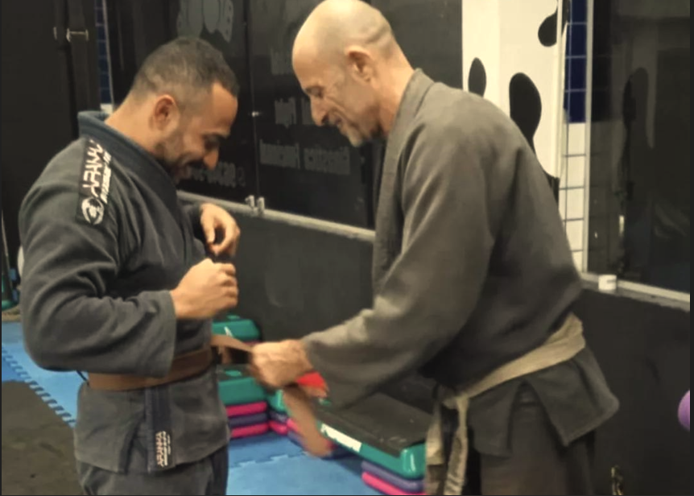
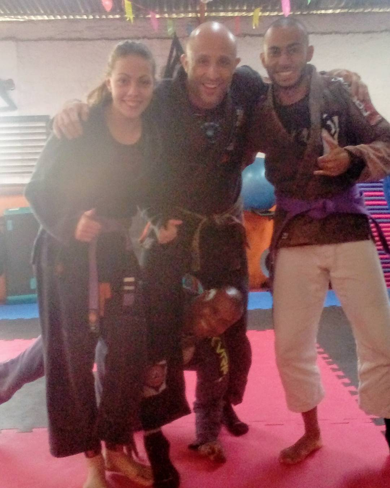
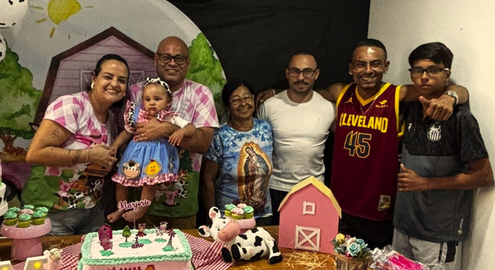
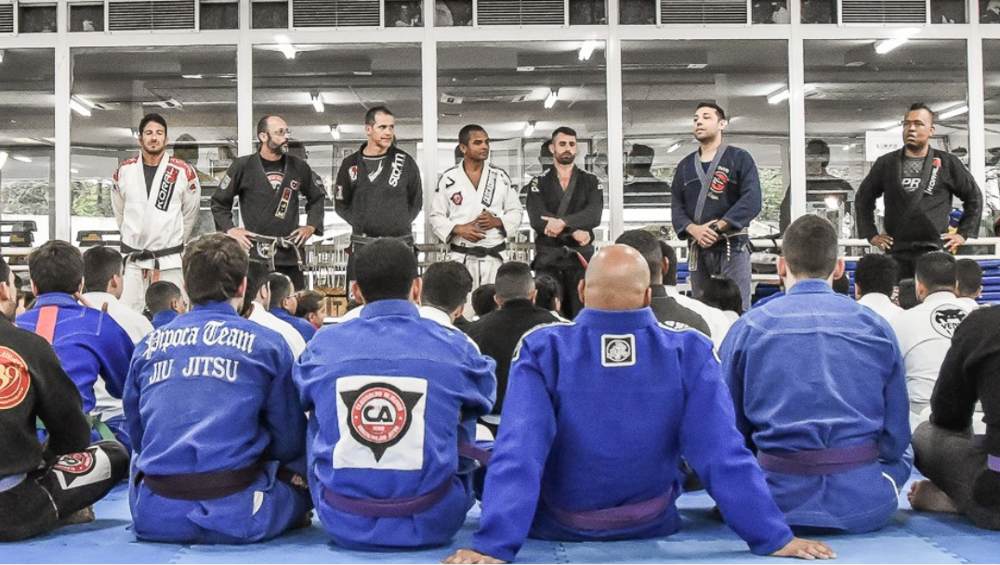
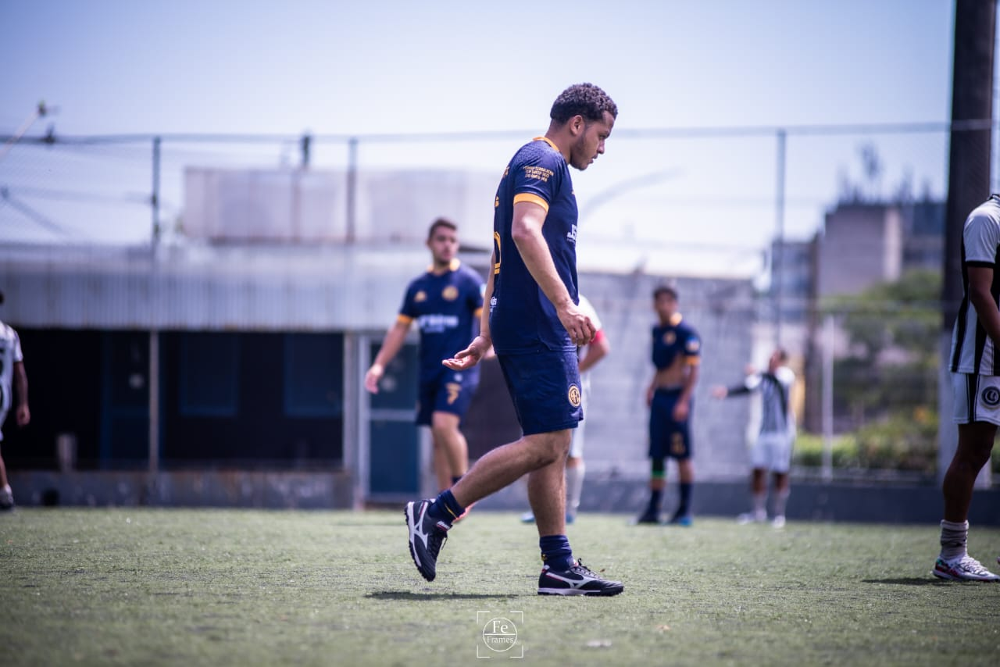
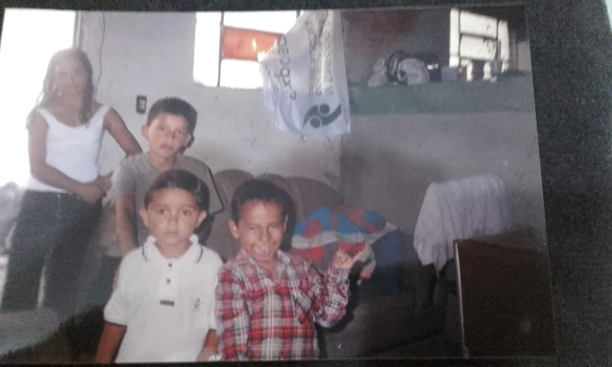
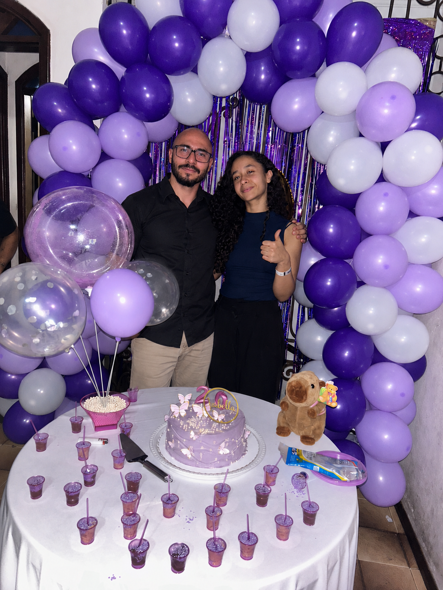
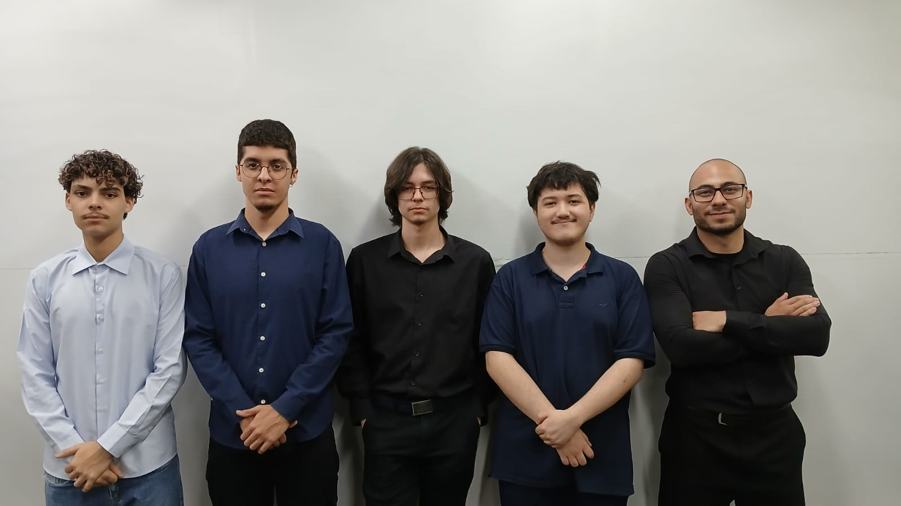

Comecei a me interessar por psicologia e neurociência após passar por um período prolongado de tristeza, onde enfrentei algumas perdas que impactaram diretamente minha forma de enxergar a vida. Nesse momento, surgiu a necessidade de entender o porquê de eu estar me sentindo daquela forma. A partir disso, comecei a estudar temas relacionados ao comportamento humano e relacionamentos, acompanhando conteúdos como os do Marcos Lacerda. Também busquei compreender melhor o funcionamento dos hormônios e do cérebro através de canais como NeuroVox. Além disso, busquei conteúdos científicos disponibilizados por instituições reconhecidas, como Harvard University, Stanford University e National Institutes of Health, para entender de forma mais fundamentada como fatores biológicos e psicológicos influenciam nossas emoções.
Durante boa parte da minha vida, mantive uma rotina de treinos constante. Nunca fui de registrar muitos momentos com fotos, mas trouxe algumas das minhas graduações como forma de representar essa trajetória. Ao refletir sobre esse período, percebi que, em comparação com a fase em que me senti mal por um longo tempo, a ausência dessa rotina teve um impacto significativo. A falta de um objetivo, mesmo que simples, como ir treinar, evoluir gradualmente, conhecer novas pessoas e até mesmo a exposição ao sol durante o trajeto, contribuiu negativamente ao meu estado emocional. Com o tempo, comecei a entender que essas pequenas ações do dia a dia não eram apenas hábitos, mas fatores importantes que influenciam diretamente nosso bem estar físico e mental.

Esse momento representa disciplina, constância e superação ao longo da minha trajetória.
Gostaria de agradecer a todas as pessoas que, de alguma forma, fizeram parte da minha trajetória. Mesmo nos momentos em que não havia clareza, foram essas experiências e convivências que contribuíram para o meu crescimento pessoal.
Agradeço também aos professores, colegas e pessoas próximas que estiveram presentes durante essa caminhada, seja incentivando, ensinando ou simplesmente fazendo parte do processo.
Cada fase vivida, incluindo as dificuldades, teve um papel importante na construção de quem sou hoje.






